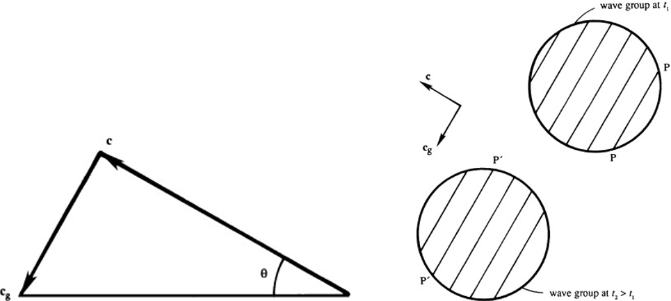

The dispersion relationship \(\omega = \frac{kN}{\sqrt{k^2 + m^2}} = \frac{kN}{K}\) for linear internal waves with constant buoyancy frequency contains a few surprises that challenge our intuitions and violate the intuition acquired by observing surface or interface waves, involving the phase and group velocity vectors \(\mathbf{c}\) and \(\mathbf{c}_g\). In multiple dimensions, these are defined by \[\mathbf{c} = \left(\frac{\omega}{K}\right) \mathbf{e}_K \text{ and } \mathbf{c}_g = e_x \left(\frac{\partial \omega}{\partial k}\right) + e_y \left(\frac{\partial \omega}{\partial l}\right) + e_z \left(\frac{\partial \omega}{\partial m}\right)\] where \(\mathbf{e}_K = \mathbf{K}/K\). For interface waves, \(\mathbf{c}\) and \(\mathbf{c}_g\) are in the same direction (though their magnitudes may differ). For internal waves, using \(\omega = \frac{kN}{\sqrt{k^2 + m^2}} = \frac{kN}{K}\), \(\mathbf{c} = \left(\frac{\omega}{K}\right) \mathbf{e}_K \text{ and } \mathbf{c}_g = e_x \left(\frac{\partial \omega}{\partial k}\right) + e_y \left(\frac{\partial \omega}{\partial l}\right) + e_z \left(\frac{\partial \omega}{\partial m}\right)\) \[\Rightarrow \mathbf{c} = \frac{\omega}{K^2}(k\mathbf{e}_x + m\mathbf{e}_z) \text{ and } \mathbf{c}_g = \frac{Nm}{K^3}(m\mathbf{e}_x - k\mathbf{e}_z)\] Taking the dot product \[\Rightarrow \mathbf{c}_g \cdot \mathbf{c} = 0\] Thus, the phase and group velocity vectors are perpendicular. \(\mathbf{c} = \frac{\omega}{K^2}(k\mathbf{e}_x + m\mathbf{e}_z) \text{ and } \mathbf{c}_g = \frac{Nm}{K^3}(m\mathbf{e}_x - k\mathbf{e}_z)\) place the horizontal components of \(\mathbf{c}\) and \(\mathbf{c}_g\) in the same direction, but their vertical components are equal and opposite. Thus, \(\mathbf{c}\) and \(\mathbf{c}_g\) form two sides of a right triangle whose hypotenuse is horizontal. Consequently, the phase velocity has an upward component when the group velocity has a downward component, and vice versa. Equations \(\mathbf{K} \cdot \mathbf{u} = 0\) and \(\mathbf{c}_g \cdot \mathbf{c} = 0\) are consistent because \(\mathbf{c}\) and \(\mathbf{K}\) are parallel, and \(\mathbf{c}_g\) and \(\mathbf{u}\) are parallel. It shows that the phase lines are propagating toward the left and upward, whereas the wave group is propagating to the right and downward. Wave crests constantly appear at one edge of the group and vanish at the other 
◀ ▶